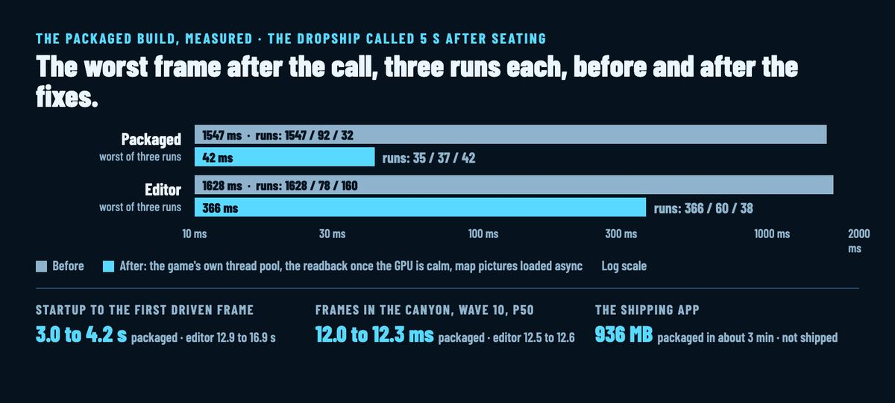

The packaged build, measured: a 1,547 ms stall down to 42
Everything on this blog so far ran inside the Unreal editor. Today an agent packaged the online mode as a Mac app and measured it the way the hidden runs measure the editor. Nothing is shipped: the app isn't published and this isn't a release. It's a measurement, and it found the real cause of a stall I'd felt from the first day.

The stall
Call the Dropship in a session's first ten seconds and the game froze for over a second. It showed in the packaged app as much as in the editor, so the cause wasn't editor overhead, and it wasn't the call either: the session's first ten seconds were running at one to two seconds a frame, and a call landing there took one.
A trace named three causes. The game's own long jobs, a region made ahead, a ground set prepared, a minimap baked, about a second each, ran on the engine's thread pool, which is the two background workers the engine's task graph also uses. A 108 ms engine task the render thread was waiting on sat 860 ms behind them in the queue. Second, the baked console art read its copy back from the GPU as soon as it could, and on Metal a readback waits until the whole GPU is idle: 668 ms with the first frames queued. Third, the world map loaded each region's picture the first time it drew it, behind everything else the loader was reading, one to two seconds a picture.
The fixes: those jobs run on a thread pool of the game's own now, three threads; the art reads back once the GPU is calm; the map's pictures load as the world arrives. The worst frame after a call 5 seconds in went from 1,547, 92 and 32 ms over three packaged runs to 35, 37 and 42, and in the editor from 1,628, 78 and 160 to 366, 60 and 38. Frames over a quarter of a second in the first ten seconds: two or three a run before, none after, in the packaged app.
What the package is like
It starts four times sooner than the editor: 3.0 to 4.2 seconds from the process starting to the first frame you drive, against 12.9 to 16.9. And it draws as fast as the editor's game. In The Fork with wave 10 out at noon, the median frame is 12.0 to 12.3 ms packaged and 12.5 to 12.6 in the editor at 1728 × 1084; at the nest in Slag Pockets with 34 bugs, 11.8 to 11.9 against 11.8 to 12.1. At 2560 × 1440 the canyon runs 13.0 to 13.4 ms packaged. Both the Development and the Shipping package take about three minutes to build; the Shipping app is 936 MB.
What only the package showed
The weather wasn't cooked into the package, so a packaged game had no rain. The build script's cook check now fails on a gap like that. Two more ensures that the editor never hit, a rule naming a class the package lacks and run-time meshes without UV densities, are fixed too. The hidden-run tool learned to run a packaged app the way it runs the editor: offscreen, silent, no Dock icon, its own save and world server, one run at a time.
Every number here is from three hidden runs on the development Mac with other worktrees building beside them, and the full tables are in the repo's builds doc.